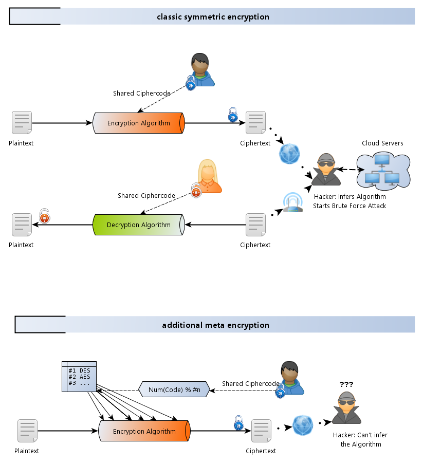
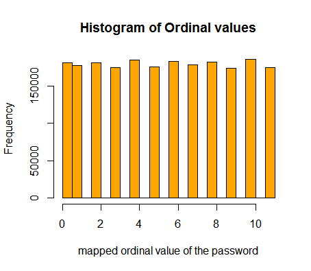

Meta-Encryption Step #1: Calculate a number from a password, and demonstrate a random distribution.
Words are mapped to numbers, which in turn determine an encryption-algorithm from a static list. Author: @sauerlo 2011, 2013
User passwords are generally not safe and are chosen pragrammatically and oportunistically, rather than randomly.[1] Likewise service providers frequently make pragmatic and opportunistic choices, thus potentially contributing to the widespread use of weak hash-functions.[2]
A barrier to brute force attacks on hash-functions is imposed, when the hashing-function is initially unknown. This may be realized by using a random cipher from a static list of well-behaved hash-functions. The use of arbitarily choosing encryption-functions, throughout the encryption process, thwarts the attempt of determining the hashing-function through entropic cues (See [3]), revealed by readily available cryptanalysis software.
Thus, to mitigate the success of brute force attacks on weak passwords with weak hash-functions, the weak password may be used to determine an initial encryption algorithm from a set of 12 or more secure encryption algorithms. During the process of encryption, algorithms may be switched in an order that is determined by the number that determined the initial algorithm.
Demo:
The number of algorithms in the list can be set with the slider above the text-field. Still demonstrated has to be, that any (pass)word determines the chosen algorithm randomly.
Both parties, that is receiver and sender, of the encrypted message need to have the same static table of algorithms to choose from. With no prior information, a brute-force attacker will not be aware which hashing algorithm was chosen, as the choice is solely dependant on the user-password, and may be as simple as each byte added up MODULO (%) the number of hash algorithms in an array:
CharacterValuesSum(plainpassword) % CipherTableCount
Process Illustration:
 Randomness:
Whilst in principle any other monotonous function may be used to derive a number from an arbitrary password, adding up the character values works well in terms of randomness. This is demonstrated below, with a list of over 2 Million actual user-passwords. The generated files, which contain number-reduced password-values, as described above, are available in the res/data/ folder.

pwdords = scan("c:/!work/Databases/passwords_ordinals_12.txt") #read into a vector
> summary(dat)
Min. : 0.000
1st Qu.: 2.000
Median : 6.000
Mean : 5.492 #perfect
3rd Qu.: 8.000
Max. :11.000
hist(pwdord, col="orange", main="Histogram of Ordinal values", xlab="mapped ordinal value of the password")